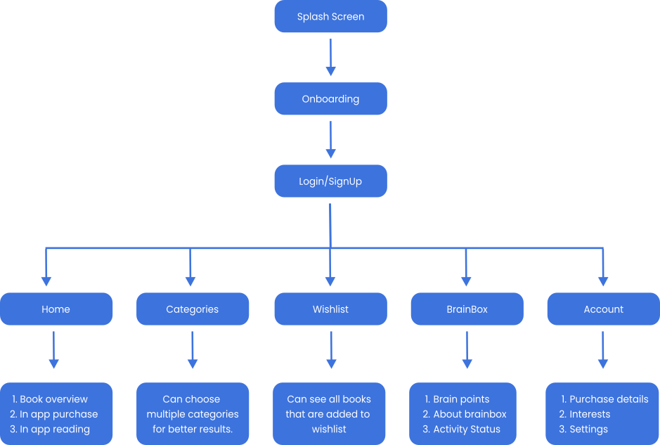

BOOKTRON
Booktron is a cross platform app which holds an awesome functionality called the “Brain Box”, this feature of booktron helps user to harness their reading prowess. Booktron not only provides a wide range of ebooks (it includes in-app ebook purchase and reading) but also rewards users with brain points which in reality are the discount coupons.
The Problems
P 1: To curate the psychological mechanism for readers as well as non readers to harness their reading prowess.
P 2: Creating a after task reward functionality to appreciate user’s efforts
P 3: Creating in app purchase and reading window for hassle free and seemlees user experience.
My Role
I contributed as the Product Designer ( User Experience (UX) and User Interface (UI)) of this project. Research analysis and constructive architecture was also accomplished under my role play..
Research
After getting a particular problem and challenge statements, we got the clear goal about what we were go in to create. Although, to get more focused and clarity; the research for Booktron was the most vital phase in creating seemless experience for our users.
So after the initial data gathering process as the process of our research we found out that we have to focus on primarily these factors.
1. Customers Insights & Ideation
2. Building the Project Vision
3. Planning and scope definition
Researched Data Analysis
The researched data analysis involved user interviews and desk research to understand how competitors and users behave.
After analysing this insights, I began to conceptualize the solution, focusing on user flows and wireframe to give me a way to iterate faster through ideas. From this, From this, I went to the production mode, designing the interface considering design principles such as contrast, hierarchy and feedback; brand attributes; user interactions, and the imagistic universe presented as briefing by the case.
User Interview
Desk research and user interview were the most vital aspects in this whole structural development of Booktron, to gather legit user and functional insights; to enhance the overall user experience by user empathy mapping and competitive analysis.
The interview sample took into account people as students and working professionals among which some are totally involved in reading and some are not so; precisely interviewed audience had different reading habits.
The included topics to get to the core of what users are trying to do and what their problems are. So I asked:
• What are your reading habits.
• Where do you get your content from.
• What products do you use for reading.
• What kinds of incentives would make you read more..
User Insights
After analysing the interviews, despite the amount of generated data, this was the most relevant information for decision-making in creating the solution:
1: Having digital medium for reading books is found to be more convinient for daily reading rather than carrying books physically.
2: Fine percentage of users struggles to build or develop indulging reading habits.
User Flow
Wireframes
User Interface
Problems and Solution Analysis
S 1: Curating in app book reading interface for the user convenience along with subliminal features like backend time stamp to keep track of reading time and enable rewards along with bookmark feature for the hassle free continuation of reading.
S 2: An incentive or reward like feature(Booktron’s BrainBox feature) to psychologically trigger the reading attribute for the user’s who struggles to build reading habits.
Style Guide
Booktron is specifically an app which is primarily a digital reading medium, so to have clear psychological connection color choice is vital and must convey the message of soothingness and trust.
Primary Colors
Grey Shades
Typography
Roboto
16px
Roboto
14px
Roboto
12px
Appreciation
A huge thanks to everyone involved in the process from getting to go. In particular, I’d like to thank Hritik Verma and Sushmeet Singh for the top notch assistance till the end, because of you guys Booktron has optimally validated in UX/UI phase from head to toe.
Relevant information should be put right at a glance, fast to scan, and easy to understand.